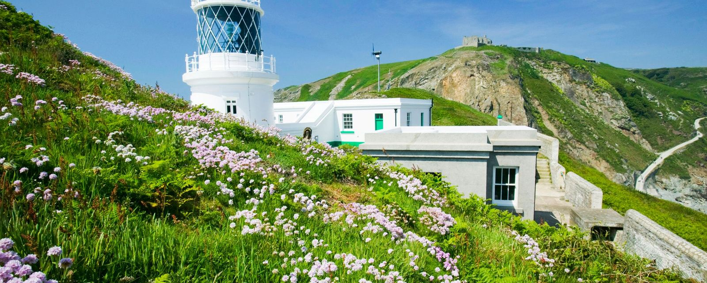
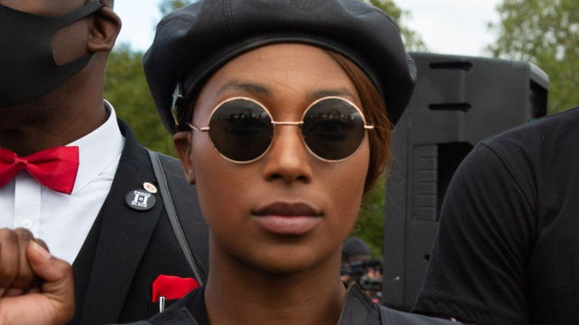
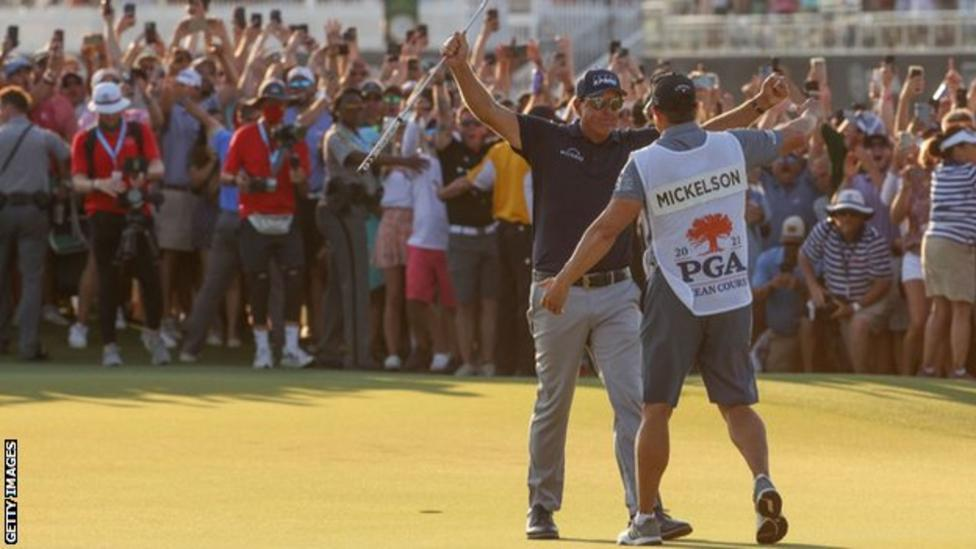
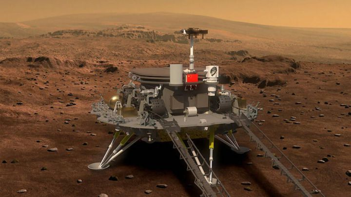
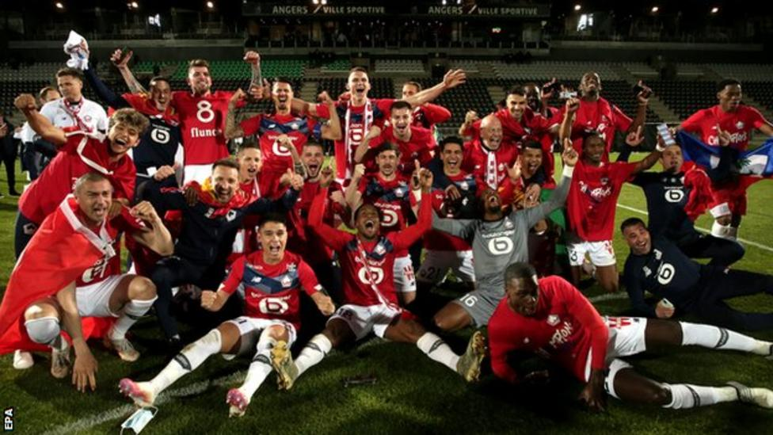
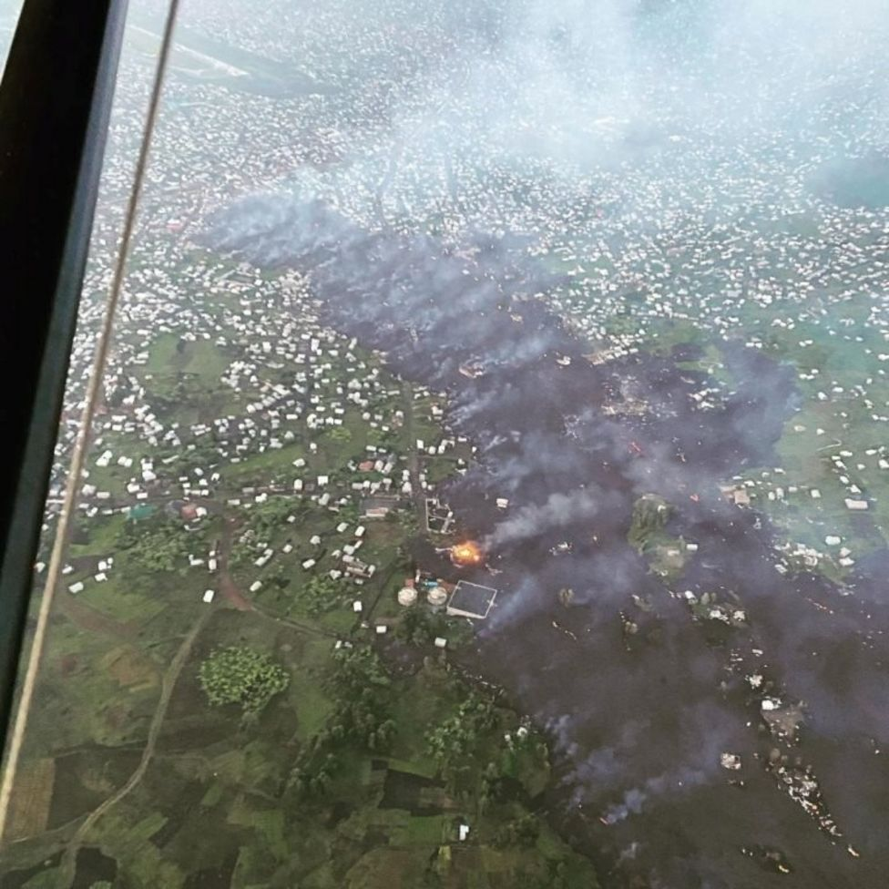

Welcome to BBC.com





News



Euro 2020: Sergio Ramos left out of Spain squad
Real Madrid centre-back Ramos, 35, has been struggling with injury and has only played one game since the end of March.
US & CANADA
Premier League Review - vote for your manager of the season
Battle for the top four - the fallout for the three clubs after dramatic final day
ASIA
Body of missing man found in Spanish dinosaur statue
Spanish police are investigating the death of a 39-year-old man whose body was found inside a dinosaur statue.
EUROPE
Sport


US PGA Championship
When Phil Mickelson fired a sparkling first-round 64 at Quail Hollow earlier this month he told his brother and caddie
GOLF
US PGA Championship
When Phil Mickelson fired a sparkling first-round 64 at Quail Hollow earlier this month he told his brother and caddie
GOLF
George Floyd death: How do I talk to my son about race?
A year on from the death of George Floyd, BBC presenter Eddie Nestor examines his role as a father and how he should approach conversations with his own children about racism.